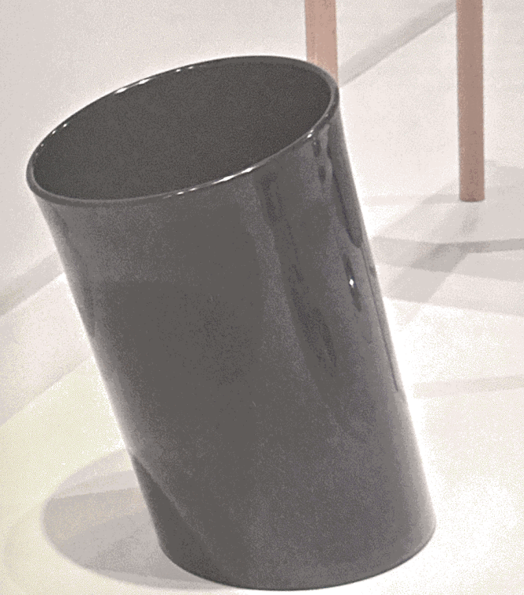

1. Wastepaper basket "in attesa"
1971 Enzo Mari Danese, Italy polypropylene
A cylinder is the most normal form that a wastepaper basket takes. With a slight tilt in the direction in which people toss their garbage, this wastepaper basket has become a new normal. The lip of the wastepaper basket being slightly thicker makes it easier to carry. Generally with molded plastic goods, attempts are made to keep the thickness of the plastic as uniform as possible to create a smooth surface. If there is a thicker section in a uniform material, a dent may appear as the material hardens, since the temperature doesn't drop uniformly through the material. This is called a "dimple defect," and it is usual for molded goods with many of these dimples to be considered poor quality. But with this wastepaper basket, it has been possible to achieve such a dimple the entire way around the lip of the wastepaper basket mouth, so that it is thicker than the rest of the body. It is not easy to revamp something normal, making it easier to use and thus creating a new normal. This wastepaper basket has succeeded in generating a normal that surpasses normal by using a technical factor, generally considered to be negative, to positive effect.

2. Small Chair
2005 Naoto Fukasawa Maruni Wood Industry, Japan beech
A chair with a squarish seat and cylindrical legs was a common theme in the 1970s, but always done in an uncompromisingly modern way, with no gesture to the body or reminder of the past. This one goes further, and in the gentle curve of the back legs we sense a tradition, older than the first Thonet chair, of the kind of comfort that is suggested by the relaxed lines of its structure. It's modern enough not to be concerned with being modern.
Citrus basket 370
1952 Ufficio technico Alessi, Italy aluminum stainless steel
You'd imagine this fruit basket (present in almost every bar in Italy) had been designed by Sottsass in the 1970s, but in fact it was designed by the Alessi technical office in 1952. It probably takes inspiration from a tradition of more finely wired bread- baskets, which were made much earlier. Increasing the scale of the wire and adjusting the proportions to suit a new function make this object genuinely Super Normal.